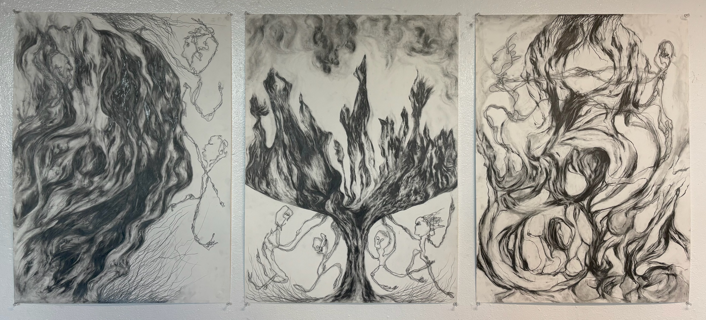

All artwork
Drawings

Three branching studies
Three monochrome compositions explore branching marks and curling movement.
Provisional title · View 1 of 401 / 30

Three monochrome compositions explore branching marks and curling movement.
Provisional title · View 1 of 4